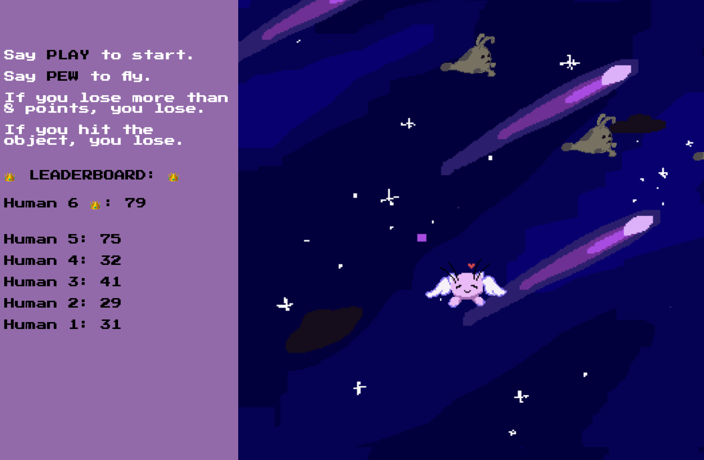

Airi Flies
Project Info
Q&A
What are you up to?
I'm a creative coder and designer, a School of Machines, Making & Make-Believe diversity scholarship recipient, and just a curious creature.
How did you get started with p5.js?
I was taking a course at the School of Machines in Berlin this summer called! "Bots and Machine Learning," mainly taught by Yining Shi.
How did you use p5.js in this project?
I used p5.js to work on the visual part of the game. The animation sprites for Airi and the ghosts were drawn on an iPad app calledPixaki and then integrated into p5.play code. I mainly used examples at p5.play as a reference.
For the endless scrolling background, I found a p5 sketch by chjno. I set a condition so whenever the word "pew" or a mouse click was detected, the scrolling speed would change to make an illusion of Airi flying up. When the user does not do anything, the scrolling speed is negative, which makes it look like Airi is falling down.
For sound recognition, I used Google's Teachable Machine 2 (currently, there is a beta version not available in public yet, but it will be very soon!). I added around 120 samples of my classmates saying the word "pew" with different intonations and 80 samples of background noise to train it. Then I integrated the model into the game with ml5.js.
What's your favorite p5.js feature?
I really love how easily you can create, manipulate, and delete HTML blocks and classes with thep5.js
library via createDiv(),
addClass() etc. But my most favorite function is draw(), since this is where you create magic.
Did you face any challenges working on this project? If so, how did you overcome them?
There were a lot of challenges simply because p5.js was something new to me. I did not work much with JavaScript in general before. Reading documentation and searching for similar examples helped a lot.
What's a cool thing we should check out?
Check out School of Machines' courses! They try hard to connect the most creative people in the world and they do it well so far. ❤️